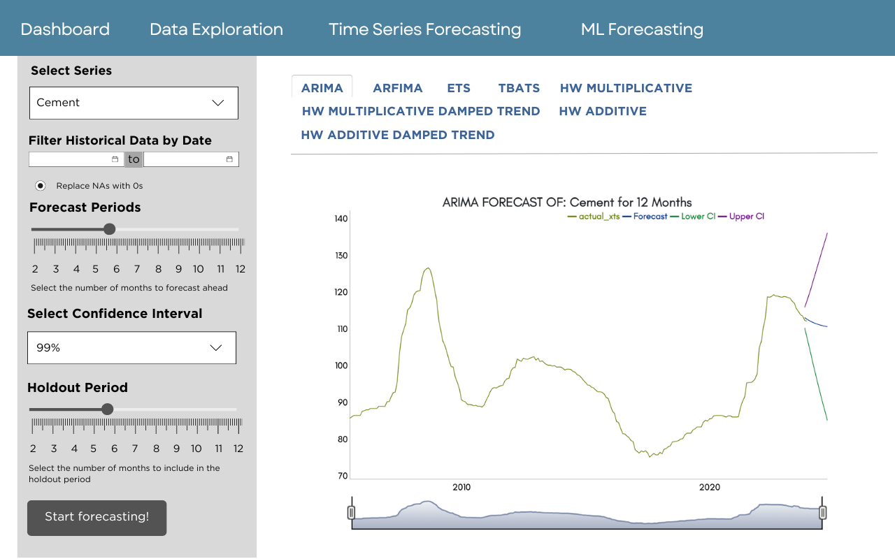
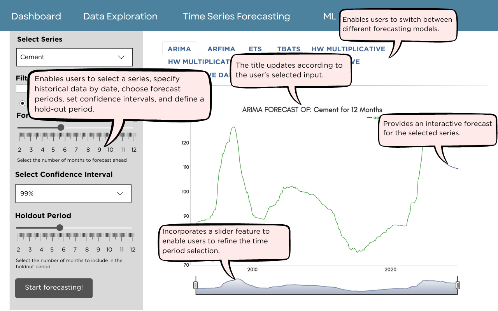

We perform several operations on the ‘ppi’ dataset to compute the percentage changes for various property price indices (PPI) and organize the data into quarters:
Percentage Change Computations:
We calculate the percentage change for different categories of property prices (PR_All, PR_Landed, PR_NL_ALL, PR_NL_CCR, PR_NL_RCR, PR_NL_OCR) compared to the previous time period. This is done by subtracting the previous value from the current value (PR_All - lag(PR_All)), dividing by the previous value (/lag(PR_All)), and then multiplying by 100 to convert it to a percentage. The lag() function is used to obtain the previous value in each series.
Quarter Assignment:
We assign each record to a quarter based on the month. This is done using the case_when function. If the month is 3 (March), it is assigned to ‘Q1’; if 6 (June), to ‘Q2’; if 9 (September), to ‘Q3’; and if 12 (December), to ‘Q4’. This categorization helps in analyzing the data on a quarterly basis.
Data Selection and Reordering:
We remove the ‘Month’ column from the dataset as it’s no longer needed after we have assigned the data to quarters.
We reorder the columns so that ‘Year’ and ‘Quarter’ appear first, followed by the rest of the columns. This reordering makes the dataset more organized and easier to understand, especially when analyzing the data based on time periods.
We perform percentage change computations for various construction material prices on both a monthly and quarterly basis:
For Monthly Changes (material_price_month):
Percentage Changes Calculation: We calculate the percentage change for each material (Cement, SteelBar, Granite, ConcretingSand, ReadyMixConcrete) from one month to the next. This is achieved by subtracting the previous month’s value from the current month’s (using lag()), dividing by the previous month’s value, and multiplying by 100 to get the change as a percentage.
Data Selection and Reordering: We remove the ‘Date’ column as it’s no longer necessary. We ensure ‘Year’ and ‘Month’ are at the beginning of our dataset, followed by the calculated percentage changes for each material, making the dataset focused and easier to analyze on a monthly basis.
For Quarterly Averages and Changes (material_price_quarter_avg):
Quarter Assignment: We categorize each month into a corresponding quarter: January to March as Q1, April to June as Q2, July to September as Q3, and October to December as Q4.
Averaging: We then group the data by ‘Year’ and ‘Quarter’ and calculate the average price for each material in each quarter. This provides us with mean values that represent the average material price for each quarter.
Percentage Changes Calculation: Similar to the monthly data, we calculate the percentage change in average prices for each material from one quarter to the next. This involves using the average price of the current quarter, subtracting the average price of the previous quarter, and then dividing by the previous quarter’s average price, multiplied by 100 to express the result as a percentage.
Data Selection and Reordering: We exclude ‘Date’ and ‘Month’ from the dataset as they’re redundant after quarter assignment. We arrange the columns to start with ‘Year’ and ‘Quarter’, followed by the percentage changes for each material, ensuring clarity and structured data for quarterly analysis.
Next, we process the ‘sti’ dataset to compute average values and percentage changes for the Strait Times Index (STI) on both a monthly and quarterly basis:
Monthly Average and Percentage Change Computations (sti_month_avg):
Grouping and Averaging:
We group the data by ‘Year’ and ‘Month’.
We then calculate the average (‘mean’) for all the columns for each group. This primarily affects the ‘Index’ values, providing us with the average index value for each month.
Percentage Change:
We ungroup the data to apply operations across all rows.
We compute the percentage change in the ‘Index’ by comparing each month’s average index value to the previous month’s (using Index - lag(Index) divided by lag(Index) and then multiplied by 100).
Data Selection and Reordering:
We remove the ‘Date’ and ‘Day’ columns as they are not needed after computing the monthly averages.
We reorder the columns so that ‘Year’ and ‘Month’ appear first, enhancing readability and making the dataset more focused on the time-series analysis.
Quarterly Average and Percentage Change Computations (sti_quarter_avg):
Quarter Assignment:
We assign each record to a quarter based on the month using the case_when function. Months are grouped into Q1 (January to March), Q2 (April to June), Q3 (July to September), and Q4 (October to December).
Data Selection:
We remove ‘Date’, ‘Month’, and ‘Day’ columns as the analysis is now on a quarterly basis.
Grouping and Averaging:
We group the data by ‘Year’ and the newly assigned ‘Quarter’.
We calculate the mean for all columns for each group, which primarily changes the ‘Index’ values to represent the average for each quarter.
Percentage Change:
After ungrouping, we compute the percentage change in the ‘Index’ similar to the monthly computation, but this time comparing each quarter’s average index value to the previous quarter’s.
Data Reordering:
Finally, we reorder the columns to have ‘Year’ and ‘Quarter’ at the beginning, followed by the other columns. This reordering makes the dataset more intuitive for quarterly time-series analysis.
We calculate the mean (average) for all the columns for each group, primarily affecting the rates (Bill1Yr, Bond2Yr, Bond5Yr, Bond10Yr), which results in average rates for each month.
Rate Changes:
After ungrouping the dataset, we compute the absolute changes (not percentage) in rates from one month to the next for different securities (1-year Treasury Bill, 2-year Bond, 5-year Bond, and 10-year Bond). This is done by subtracting the previous month’s rate from the current month’s rate for each type of rate (using the lag() function).
Data Selection and Reordering:
We remove the ‘Date’ and ‘Day’ columns as they are unnecessary after monthly aggregation.
We reorder the columns so that ‘Year’ and ‘Month’ are at the beginning, followed by the rate change calculations and other relevant data, making the dataset structured and easier to analyze monthly changes.
Similar to the monthly computation, we first assign each record to a quarter based on the month using the case_when function.
Data Selection and Grouping:
We remove unnecessary ‘Date’, ‘Month’, and ‘Day’ columns and then group the data by ‘Year’ and ‘Quarter’.
Averaging:
We calculate the mean for all the columns for each ‘Year’ and ‘Quarter’ group, focusing on the rates to obtain quarterly averages.
Rate Changes:
We ungroup the data for broad application of subsequent functions.
We compute the absolute changes in rates from one quarter to the next for the different securities. This involves calculating the difference between each quarter’s average rate and the previous quarter’s average rate for each type of security.
Data Reordering:
Finally, we reorder the columns to start with ‘Year’ and ‘Quarter’, followed by the calculated rate changes and other data, ensuring the dataset is well-organized for analyzing quarterly trends.
We perform percentage change computations for the Singapore Overnight Rate Average (SORA) on both monthly and quarterly bases to analyze the fluctuations in interest rates over time:
For the Monthly Data (sora_month_avg):
Grouping and Averaging: We group the data by ‘Year’ and ‘Month’ and then calculate the average for all columns within each group. This specifically impacts the ‘Rate’, providing us with the average SORA for each month.
Rate Changes: After removing the group structure by ungrouping, we calculate the month-to-month change in SORA. We achieve this by subtracting the previous month’s rate from the current month’s rate, obtaining the absolute change in rate.
Data Selection and Reordering: We remove ‘Date’ and ‘Day’ columns, as they’re not required post-aggregation. We then reorder the columns to have ‘Year’ and ‘Month’ at the beginning, followed by the rate changes and other pertinent data, making the dataset well-organized for monthly analysis.
For the Quarterly Data (sora_quarter_avg):
Quarter Assignment: We assign each record to a specific quarter based on its month, categorizing them into Q1 (January-March), Q2 (April-June), Q3 (July-September), and Q4 (October-December) using the case_when function.
Data Selection and Grouping: We discard ‘Date’, ‘Month’, and ‘Day’ columns as our focus shifts to quarterly analysis. We then group the data by ‘Year’ and ‘Quarter’ for subsequent processing.
Averaging: We compute the mean of all columns for each group defined by ‘Year’ and ‘Quarter’, centering our attention on the ‘Rate’ to ascertain the average SORA for each quarter.
Rate Changes: After ungrouping, we calculate the quarter-to-quarter change in SORA by subtracting the rate of the preceding quarter from the rate of the current quarter, thus deriving the absolute rate change.
Data Reordering: Lastly, we arrange the columns starting with ‘Year’ and ‘Quarter’, followed by the computed rate changes and other relevant information. This rearrangement ensures that our dataset is systematically organized for evaluating quarterly trends in SORA.
Finally, we consolidate the various datasets into two comprehensive datasets: one aggregated by month and the other by quarter:
For Monthly Data Aggregation (data_by_month):
Data Merging: We start by joining the ‘material_price_month’ dataset with ‘sti_month_avg’, ‘tbillbond_month_avg’, and ‘sora_month_avg’. We ensure that the data align correctly by using ‘Year’ and ‘Month’ as the keys for joining.
Label Creation: We then create a ‘MonthLabel’ for each entry by concatenating the ‘Month’ and ‘Year’, making it easier to reference specific points in time.
Date Standardization: We convert the ‘Year’ and ‘Month’ into a standard date format, assuming the first day of each month (‘01’) as the default date, to ensure consistency in time-series analysis.
Data Selection and Reordering: Finally, we select and rearrange our columns, placing the newly created ‘Date’ and ‘MonthLabel’ at the forefront, while removing redundant ‘Year’ and ‘Month’ columns for clarity and conciseness.
For Quarterly Data Aggregation (data_by_quarter):
Data Merging: Similar to the monthly dataset, we merge ‘ppi_quarter’ with ‘material_price_quarter_avg’, ‘sti_quarter_avg’, ‘tbillbond_quarter_avg’, and ‘sora_quarter_avg’, using ‘Year’ and ‘Quarter’ as joining keys.
Label Creation: A ‘QuarterLabel’ is generated for each record by merging the ‘Quarter’ with the ‘Year’, facilitating easy identification of each period.
Date Standardization: We standardize the ‘Date’ to represent the first day of the ending month of each quarter (March, June, September, December), transforming ‘Year’ and ‘Quarter’ into a complete date format suitable for time-series evaluations.
Data Selection and Reordering: We organize our dataset by selecting necessary columns and rearranging them so that ‘Date’ and ‘QuarterLabel’ lead, streamlining the dataset while omitting redundant ‘Year’ and ‘Quarter’ information.
Code
# put all monthly data into 1 datasetdata_by_month <- material_price_month %>%inner_join(sti_month_avg, by =c("Year", "Month")) %>%inner_join(tbillbond_month_avg, by =c("Year", "Month")) %>%inner_join(sora_month_avg, by =c("Year", "Month")) %>%mutate(MonthLabel =paste0(Month, 'M', as.character(Year))) %>%mutate(Date =as.Date(paste0('01-', Month, '-', Year), format="%d-%m-%Y")) %>%select(Date, MonthLabel, everything(), -Year, -Month)# put all quarter data into 1 datasetdata_by_quarter <- ppi_quarter %>%inner_join(material_price_quarter_avg, by =c("Year", "Quarter")) %>%inner_join(sti_quarter_avg, by =c("Year", "Quarter")) %>%inner_join(tbillbond_quarter_avg, by =c("Year", "Quarter")) %>%inner_join(sora_quarter_avg, by =c("Year", "Quarter")) %>%mutate(QuarterLabel =paste0(Quarter, as.character(Year))) %>%mutate(Date =paste0(Year, '-', ifelse(Quarter =="Q1", "03", ifelse(Quarter =="Q2", "06",ifelse(Quarter =="Q3", "09", "12"))), "-01")) %>%mutate(Date =as.Date(Date)) %>%select(Date, QuarterLabel, everything(), -Year, -Quarter)
2. Data Visualisation Techniques
We decided to choose a diverse set of forecasting models to address the unique characteristics and requirements of our time series data.
By selecting this range of models, we aim to capture the essential dynamics of our dataset, including linear trends, seasonalities, long memory, and non-linear relationships, to ensure robust and accurate forecasting results.
These models include:
ARIMA (Autoregressive Integrated Moving Average)
Chosen for its versatility in handling various time series patterns, particularly useful for our data showing linear relationships and trends, such as in economic and financial variables.
Code
# Ensure 'Date' is in Date format and 'Cement' column is numericdata_by_month <- data_by_month %>%mutate(Date =as.Date(Date),Cement =as.numeric(Cement))# Subsetting the 'Cement' series for demonstration excluding the last 2 months for holdoutend_holdout <-max(data_by_month$Date) -months(2)training_data <-filter(data_by_month, Date <= end_holdout)# Convert the filtered series to time seriesseries <-ts(training_data$Cement, start=c(year(min(training_data$Date)), month(min(training_data$Date))), frequency=12)# Fit ARIMA modelfit_arima <-auto.arima(series)# Forecast for the next 12 months including 99% confidence intervalfuture_arima <-forecast(fit_arima, h=12, level=c(99))# Convert forecast to an 'xts' object for plottinglast_training_date <-max(training_data$Date)forecast_dates <-seq(from = last_training_date +months(1), by ="month", length.out =12)forecast_xts <-xts(future_arima$mean, order.by = forecast_dates)# Since the available columns for CI are named "99%", we will use these for the lower and upper bounds.forecast_lower_xts <-xts(future_arima$lower[, "99%"], order.by = forecast_dates)forecast_upper_xts <-xts(future_arima$upper[, "99%"], order.by = forecast_dates)# Create an xts object from actual data for plottingactual_xts <-xts(data_by_month$Cement, order.by = data_by_month$Date)# Combine actual, forecasted, and confidence interval data for plottingcombined_xts <-merge(actual_xts, forecast_xts, forecast_lower_xts, forecast_upper_xts, all =TRUE)# Plot with dygraphdygraph(combined_xts, main ="ARIMA FORECAST OF: Cement for 12 Months") %>%dyOptions(drawGrid =FALSE) %>%dySeries("forecast_xts", label ="Forecast") %>%dySeries("forecast_lower_xts", label ="Lower CI") %>%dySeries("forecast_upper_xts", label ="Upper CI") %>%dyLegend(width =400, show ="always")
Selected due to its capability to model time series with long memory properties, which is expected in variables like %Change_Index or Rate, where past values may influence future trends over extended periods.
Code
# Ensure 'Date' is in Date format and 'Cement' column is numericdata_by_month <- data_by_month %>%mutate(Date =as.Date(Date),Cement =as.numeric(Cement))# Subsetting the 'Cement' series for demonstration excluding the last 2 months for holdoutend_holdout <-max(data_by_month$Date) -months(2)training_data <-filter(data_by_month, Date <= end_holdout)# Convert the filtered series to time seriesseries <-ts(training_data$Cement, start=c(year(min(training_data$Date)), month(min(training_data$Date))), frequency=12)# Fit ARFIMA modelfit_arfima <-arfima(series)# Forecast for the next 12 months including 99% confidence intervalfuture_arfima <-forecast(fit_arfima, h=12, level=c(99)) # Include 99% confidence interval# Convert forecast to an 'xts' object for plotting, includes mean and confidence intervalslast_training_date <-max(training_data$Date)forecast_dates <-seq(from = last_training_date +months(1), by ="month", length.out =12)forecast_xts_arfima <-xts(future_arfima$mean, order.by = forecast_dates)forecast_lower_xts_arfima <-xts(future_arfima$lower[, "99%"], order.by = forecast_dates) # Adjusted for ARFIMA specificsforecast_upper_xts_arfima <-xts(future_arfima$upper[, "99%"], order.by = forecast_dates) # Adjusted for ARFIMA specifics# Create an xts object from actual data for plottingactual_xts <-xts(data_by_month$Cement, order.by = data_by_month$Date)# Combine actual, forecasted, and confidence interval data for plottingcombined_xts_arfima <-merge(actual_xts, forecast_xts_arfima, forecast_lower_xts_arfima, forecast_upper_xts_arfima, all =TRUE)# Plot with dygraphdygraph(combined_xts_arfima, main ="ARFIMA FORECAST OF: Cement for 12 Months") %>%dyOptions(drawGrid =FALSE) %>%dySeries("forecast_xts_arfima", label ="Forecast") %>%dySeries("forecast_lower_xts_arfima", label ="Lower CI") %>%dySeries("forecast_upper_xts_arfima", label ="Upper CI") %>%dyLegend(width =400, show ="always")
ETS (Error, Trend, Seasonality)
Utilized for its flexibility in modeling time series with or without seasonal and trend components, making it an excellent choice for variables such as Cement, SteelBar, or ReadyMixConcrete, which might exhibit cyclical industry patterns.
Code
# Ensure 'Date' is in Date format and 'Cement' column is numericdata_by_month <- data_by_month %>%mutate(Date =as.Date(Date),Cement =as.numeric(Cement))# Subsetting the 'Cement' series for demonstration excluding the last 2 months for holdoutend_holdout <-max(data_by_month$Date) -months(2)training_data <-filter(data_by_month, Date <= end_holdout)# Convert the filtered series to time seriesseries <-ts(training_data$Cement, start=c(year(min(training_data$Date)), month(min(training_data$Date))), frequency =12)# Fit ETS modelfit_ets <-ets(series)# Forecast for the next 12 months including 99% confidence intervalfuture_ets <-forecast(fit_ets, h =12, level =c(99)) # Including 99% CI# Convert forecast to an 'xts' object for plotting, includes mean and confidence intervalslast_training_date <-max(training_data$Date)forecast_dates_ets <-seq(from = last_training_date +months(1), by ="month", length.out =12)forecast_xts_ets <-xts(future_ets$mean, order.by = forecast_dates_ets)forecast_lower_xts_ets <-xts(future_ets$lower[, "99%"], order.by = forecast_dates_ets) # 99% CI lowerforecast_upper_xts_ets <-xts(future_ets$upper[, "99%"], order.by = forecast_dates_ets) # 99% CI upper# Create an xts object from actual data for plottingactual_xts <-xts(data_by_month$Cement, order.by = data_by_month$Date)# Combine actual, forecasted, and confidence interval data for plottingcombined_xts_ets <-merge(actual_xts, forecast_xts_ets, forecast_lower_xts_ets, forecast_upper_xts_ets, all =TRUE)# Plot with dygraphdygraph(combined_xts_ets, main ="ETS FORECAST OF: Cement for 12 Months") %>%dyOptions(drawGrid =FALSE) %>%dySeries("forecast_xts_ets", label ="Forecast") %>%dySeries("forecast_lower_xts_ets", label ="Lower CI") %>%dySeries("forecast_upper_xts_ets", label ="Upper CI") %>%dyLegend(width =400, show ="always")
Holt-Winters Method
This method, including its Additive, Multiplicative, and Damped Trend variations, was chosen for its strength in forecasting data with seasonal variations. We apply:
Multiplicative and Multiplicative Damped Trend models for series where seasonal effects multiply as the series grows, applicable to demand cycles in construction materials.
Additive and Additive Damped Trend models for series with constant seasonal fluctuations, relevant for our financial rates and indices with smaller, consistent seasonal changes.
Code
# Fit HW Multiplicative modelfit_hw_multiplicative <-HoltWinters(series, seasonal ="multiplicative")# Forecast for the next 12 months including 99% confidence intervalfuture_hw_multiplicative <-forecast(fit_hw_multiplicative, h=12, level=c(99))# Prepare for plottinglast_training_date <-max(training_data$Date)forecast_dates_hw <-seq(from = last_training_date +months(1), by ="month", length.out =12)forecast_xts_hw_multiplicative <-xts(future_hw_multiplicative$mean, order.by = forecast_dates_hw)# Extract and convert the lower and upper bounds of the 99% CI for plottingforecast_lower_xts_hw_multiplicative <-xts(future_hw_multiplicative$lower[, "99%"], order.by = forecast_dates_hw) # Index based on typical structure, adjust if neededforecast_upper_xts_hw_multiplicative <-xts(future_hw_multiplicative$upper[, "99%"], order.by = forecast_dates_hw) # Same here# Combine actual data and forecast for plottingactual_xts <-xts(data_by_month$Cement, order.by = data_by_month$Date)combined_xts_hw_multiplicative <-merge(actual_xts, forecast_xts_hw_multiplicative, forecast_lower_xts_hw_multiplicative, forecast_upper_xts_hw_multiplicative, all =TRUE)# Plotting with dygraphdygraph(combined_xts_hw_multiplicative, main ="HW MULTIPLICATIVE FORECAST OF: Cement for 12 Months") %>%dyOptions(drawGrid =FALSE) %>%dySeries("forecast_xts_hw_multiplicative", label ="Forecast") %>%dySeries("forecast_lower_xts_hw_multiplicative", label ="Lower CI") %>%dySeries("forecast_upper_xts_hw_multiplicative", label ="Upper CI") %>%dyLegend(width =400, show ="always")
Code
# Fit HW Multiplicative Damped Trend model with specified levelfit_hw_multiplicative_damped <- forecast::hw(series, seasonal ="multiplicative", damped =TRUE, level =c(99))# Forecast for the next 12 monthsfuture_hw_multiplicative_damped <-forecast(fit_hw_multiplicative_damped, h =12)# Prepare for plottingforecast_dates_hw_damped <-seq(from = last_training_date +months(1), by ="month", length.out =12)forecast_xts_hw_multiplicative_damped <-xts(future_hw_multiplicative_damped$mean, order.by = forecast_dates_hw_damped)# Extract and convert the lower and upper bounds of the 99% CI for plottingforecast_lower_xts_hw_multiplicative_damped <-xts(future_hw_multiplicative_damped$lower[, "99%"], order.by = forecast_dates_hw_damped)forecast_upper_xts_hw_multiplicative_damped <-xts(future_hw_multiplicative_damped$upper[, "99%"], order.by = forecast_dates_hw_damped)# Combine actual data and forecast for plottingcombined_xts_hw_multiplicative_damped <-merge(actual_xts, forecast_xts_hw_multiplicative_damped, forecast_lower_xts_hw_multiplicative_damped, forecast_upper_xts_hw_multiplicative_damped, all =TRUE)# Plotting with dygraphdygraph(combined_xts_hw_multiplicative_damped, main ="HW MULTIPLICATIVE DAMPED TREND FORECAST OF: Cement for 12 Months") %>%dyOptions(drawGrid =FALSE) %>%dySeries("forecast_xts_hw_multiplicative_damped", label ="Forecast") %>%dySeries("forecast_lower_xts_hw_multiplicative_damped", label ="Lower CI") %>%dySeries("forecast_upper_xts_hw_multiplicative_damped", label ="Upper CI") %>%dyLegend(width =400, show ="always")
Code
# Fit HW Additive model with specified levelfit_hw_additive <- forecast::hw(series, seasonal ="additive", level =c(99))# Forecast for the next 12 monthsfuture_hw_additive <-forecast(fit_hw_additive, h =12)# Prepare for plottingforecast_dates_hw_additive <-seq(from = last_training_date +months(1), by ="month", length.out =12)forecast_xts_hw_additive <-xts(future_hw_additive$mean, order.by = forecast_dates_hw_additive)# Extract and convert the lower and upper bounds of the 99% CI for plottingforecast_lower_xts_hw_additive <-xts(future_hw_additive$lower[, "99%"], order.by = forecast_dates_hw_additive)forecast_upper_xts_hw_additive <-xts(future_hw_additive$upper[, "99%"], order.by = forecast_dates_hw_additive)# Combine actual data and forecast for plottingcombined_xts_hw_additive <-merge(actual_xts, forecast_xts_hw_additive, forecast_lower_xts_hw_additive, forecast_upper_xts_hw_additive, all =TRUE)# Plotting with dygraphdygraph(combined_xts_hw_additive, main ="HW ADDITIVE FORECAST OF: Cement for 12 Months") %>%dyOptions(drawGrid =FALSE) %>%dySeries("forecast_xts_hw_additive", label ="Forecast") %>%dySeries("forecast_lower_xts_hw_additive", label ="Lower CI") %>%dySeries("forecast_upper_xts_hw_additive", label ="Upper CI") %>%dyLegend(width =400, show ="always")
Code
# Fit HW Additive Damped Trend model with specified levelfit_hw_additive_damped <- forecast::hw(series, seasonal ="additive", damped =TRUE, level =c(99))# Forecast for the next 12 monthsfuture_hw_additive_damped <-forecast(fit_hw_additive_damped, h =12)# Prepare for plottingforecast_dates_hw_additive_damped <-seq(from = last_training_date +months(1), by ="month", length.out =12)forecast_xts_hw_additive_damped <-xts(future_hw_additive_damped$mean, order.by = forecast_dates_hw_additive_damped)# Extract and convert the lower and upper bounds of the 99% CI for plottingforecast_lower_xts_hw_additive_damped <-xts(future_hw_additive_damped$lower[, "99%"], order.by = forecast_dates_hw_additive_damped)forecast_upper_xts_hw_additive_damped <-xts(future_hw_additive_damped$upper[, "99%"], order.by = forecast_dates_hw_additive_damped)# Combine actual data and forecast for plottingcombined_xts_hw_additive_damped <-merge(actual_xts, forecast_xts_hw_additive_damped, forecast_lower_xts_hw_additive_damped, forecast_upper_xts_hw_additive_damped, all =TRUE)# Plotting with dygraphdygraph(combined_xts_hw_additive_damped, main ="HW ADDITIVE DAMPED TREND FORECAST OF: Cement for 12 Months") %>%dyOptions(drawGrid =FALSE) %>%dySeries("forecast_xts_hw_additive_damped", label ="Forecast") %>%dySeries("forecast_lower_xts_hw_additive_damped", label ="Lower CI") %>%dySeries("forecast_upper_xts_hw_additive_damped", label ="Upper CI") %>%dyLegend(width =400, show ="always")
TBATS
(Trigonometric, Box-Cox transformation, ARMA errors, Trend, and Seasonal components)
Adopted for its ability to handle time series with complex or multiple seasonal patterns, which is crucial for our dataset that includes construction materials and financial variables potentially subject to multiple influencing cycles.
Code
# Fit TBATS modelfit_tbats <-tbats(series)# Forecast for the next 12 months including 99% confidence intervalfuture_tbats <-forecast(fit_tbats, h=12, level=c(99))# Prepare for plottinglast_training_date <-max(training_data$Date)forecast_dates_tbats <-seq(from = last_training_date +months(1), by ="month", length.out =12)forecast_xts_tbats <-xts(future_tbats$mean, order.by = forecast_dates_tbats)# Extract and convert the lower and upper bounds of the 99% CI for plottingforecast_lower_xts_tbats <-xts(future_tbats$lower[, "99%"], order.by = forecast_dates_tbats)forecast_upper_xts_tbats <-xts(future_tbats$upper[, "99%"], order.by = forecast_dates_tbats)# Combine actual data and forecast for plottingactual_xts <-xts(data_by_month$Cement, order.by = data_by_month$Date)combined_xts_tbats <-merge(actual_xts, forecast_xts_tbats, forecast_lower_xts_tbats, forecast_upper_xts_tbats, all =TRUE)# Plotting with dygraphdygraph(combined_xts_tbats, main ="TBATS FORECAST OF: Cement for 12 Months") %>%dyOptions(drawGrid =FALSE) %>%dySeries("forecast_xts_tbats", label ="Forecast") %>%dySeries("forecast_lower_xts_tbats", label ="Lower CI") %>%dySeries("forecast_upper_xts_tbats", label ="Upper CI") %>%dyLegend(width =400, show ="always")
3. Data Visualization Design

Figure 1: Proposed Layout For Time Series Forecasting

Figure 2: Proposed Layout For Time Series Forecasting With Explanations
We designed the user interface (UI) of our time series forecasting application with multiple components to enhance interactivity and user engagement. Here’s how we approached the design:
Top Navigation Tabs: We implemented tabs at the top (Dashboard, Data Exploration, Time Series Forecasting, ML) to facilitate easy navigation throughout the application. This design choice aims to provide clear and accessible navigation paths, allowing users to seamlessly switch between different analytical contexts without confusion.
Series Selection Dropdown: We incorporated a dropdown menu for users to select from different time series variables such as Cement, SteelBar, Granite, etc. This feature supports user autonomy by enabling them to choose the specific series they wish to analyze, adhering to the principles of user control and freedom.
Forecasting Model Selection Tabs: We added model selection tabs (ARIMA, ARFIMA, ETS, TBATS, HW MULTIPLE) to allow users to easily switch between various forecasting models. This component is designed to support comparative analysis and cater to different user preferences and data specifics, promoting an inclusive user experience.
Configurable Settings:
We provided options for users to define historical data ranges, forecast periods, confidence intervals, and hold-out periods. This customization capability is intended to enhance flexibility and efficiency, allowing users to tailor the analysis to their specific needs.
We included sliders for forecast and hold-out period adjustments to offer a dynamic interaction mechanism. This choice enhances the application’s intuitiveness and user engagement by allowing for easy and immediate parameter modifications.
Interactive Forecast Visualization:
Our design features an interactive forecast chart that updates in real time based on the user’s selections, such as the forecasting model and time range. We ensured the chart’s title reflects these selections (e.g., “ARIMA FORECAST OF: Cement for 12 Months”) to provide clear and immediate feedback.
We integrated a slider beneath the forecast chart to enable refined time period exploration. This element allows users to visually adjust and examine different segments of the forecast, promoting a hands-on analytical experience.
Consistency and Clarity in Visual Design:
We focused on clear labeling, consistent visual themes, and distinct section demarcations to ensure the interface is straightforward and user-friendly. The use of contrasting colors and structured layouts aids in distinguishing between various UI elements and functionalities.
Our design prioritizes real-time feedback, such as dynamically updating charts and titles based on user interactions. This approach is aimed at keeping users engaged and informed about the consequences of their actions within the application.